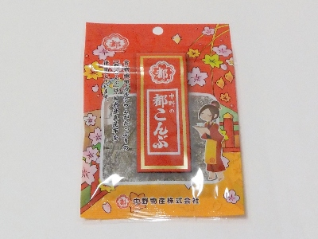
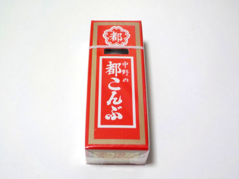

中野物産の中野の都こんぶ。
2025/04/14

大きさいろいろの大容量タイプです。
とってもお得ですけど、袋の中で昆布が動くのでパウダーの付き方がまちまちです。
均一な味が好きな人は箱に入ったものを購入した方がいいです。私は箱の方が好きです。
大阪府堺市堺区大仙中町14-20
2025/04/14

大きさいろいろの大容量タイプです。
とってもお得ですけど、袋の中で昆布が動くのでパウダーの付き方がまちまちです。
均一な味が好きな人は箱に入ったものを購入した方がいいです。私は箱の方が好きです。
2023/01/08

有名なお菓子です。パッケージに「中野の」って書いてありますが、中野物産って会社の商品だとは知りませんでした。
久しぶりに買いました。思っていたより昆布の量が多かったです。海の栄養が沢山吸収出来そうな気がしました。
でもこれって一度に全部食べれないな。「開封後はお早めにお召し上がり下さい。」とあるので、冷蔵庫に入れてコツコツ食べようと思います。